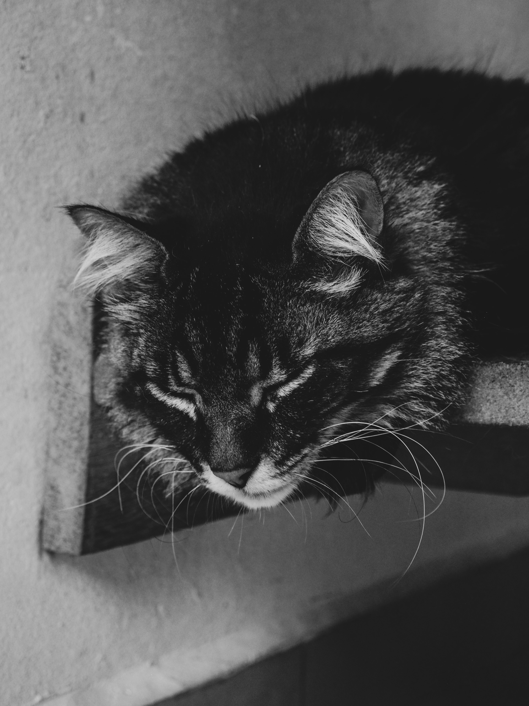
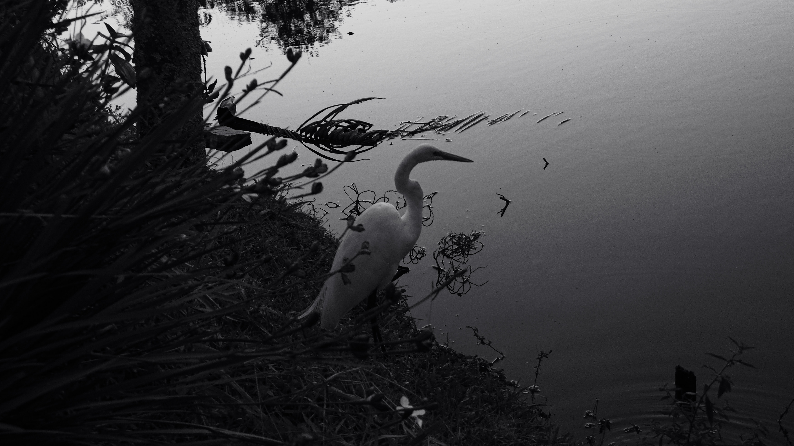

SOBRE
MIM
Meu nome é Tyler, tenho 19 anos e estou cursando Análise e Desenvolvimento de sistemas na unidade SESI SENAI, em Florianópolis, SC. Me interesso pela área de React + Javascript, e é o que busco me aprofundar. Igualmente tenho interesse pela área de banco de dados e tenho vários projetos e exercícios usando a linguagem SQL. Não possuo experiência com trabalho, mas sou totalmente aberto a aprender mais, coopero bem em equipe e sempre me comunico. A decoração inteira do portfólio é feita por fotografias minhas, pensado para não ser exagerado mas ainda assim algo que me represente.

